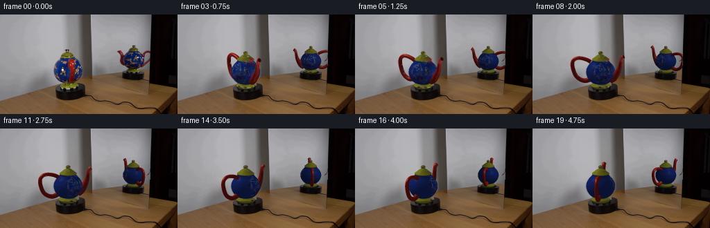
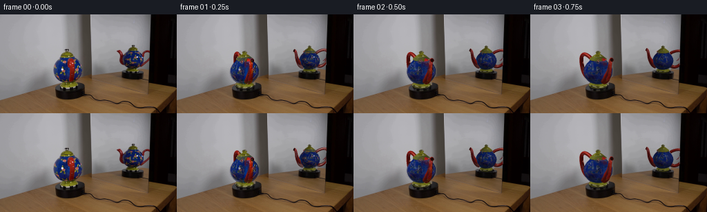
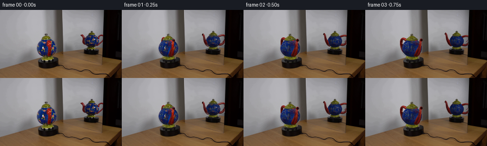
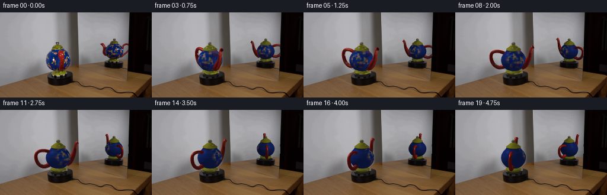
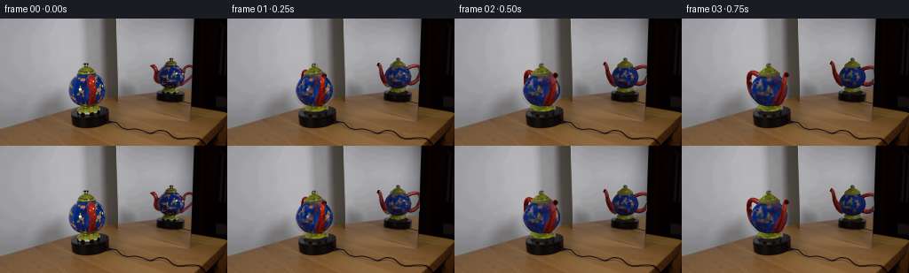
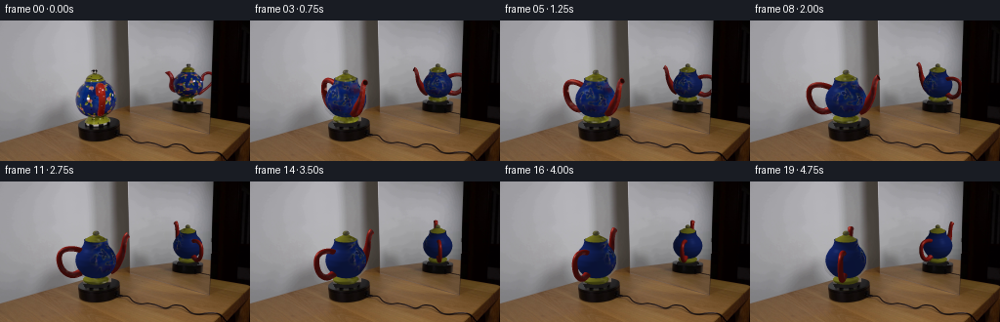
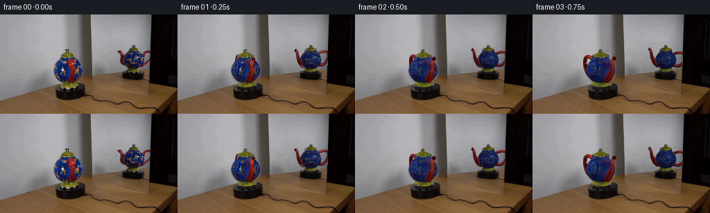

CODING AGENTS AS PIXEL WORLD MODELS
traex/GPT-6.1-Sol · 0123
点击播放 · 原生 RGB 像素
逐轮保存的候选
回放视频、检查图与代码变化。
每份候选均可单独播放。实际图片检查记录在下方工具轨迹中。
候选 01播放与检查图
点击播放 · 原生 RGB 像素


展开代码变化
--- 上一保存版本
+++ 本次保存版本
@@ -0,0 +1,318 @@
+import numpy as np
+from PIL import Image
+from pathlib import Path
+import cv2
+from scipy.interpolate import PchipInterpolator
+from scipy.ndimage import map_coordinates, gaussian_filter
+import artifact_io
+
+ROOT=Path(__file__).parent
+W,H=256,144
+SS=3
+im=np.asarray(Image.open(ROOT/'first_frame.png').convert('RGB')).astype(float)
+
+# Orthographic views of the real object and its virtual image.
+def view(az,cx,by,scale,flip=1):
+ a=np.deg2rad(az); e=np.arcsin(.25)
+ h=np.array([np.cos(a),-np.sin(a),0])*flip
+ d=np.array([np.sin(a)*np.cos(e),np.cos(a)*np.cos(e),np.sin(e)])
+ u=np.cross(h,d)*flip
+ return dict(h=h,d=d,u=u,cx=cx,by=by,s=scale,flip=flip)
+views=[view(80,98.25,106.2,20.3),view(34,192.25,83.9,14.6,-1)]
+
+def project(p,v):
+ return np.stack([v['cx']+v['s']*(p@v['h']), v['by']-v['s']*(p@v['u']),p@v['d']],axis=-1)
+
+def rotate(p,t):
+ q=np.array(p,copy=True); c,s=np.cos(t),np.sin(t)
+ q[...,0]=c*p[...,0]-s*p[...,1];q[...,1]=s*p[...,0]+c*p[...,1]
+ return q
+
+def sample(a,xy):
+ shape=xy.shape[:-1]
+ coords=np.stack([xy[...,1].reshape(-1),xy[...,0].reshape(-1)])
+ return np.stack([map_coordinates(a[...,k],coords,order=1,mode='nearest').reshape(shape) for k in range(3)],axis=-1)
+
+# Extract the exact outlines using row-wise RGB evidence. All masks are derived
+# from the one supplied image; no external assets are needed.
+def rowmask(points):
+ a=np.zeros((H,W),np.uint8)
+ ys=np.arange(points[0][0],points[-1][0]+1)
+ left=np.interp(ys,[p[0] for p in points],[p[1] for p in points]);right=np.interp(ys,[p[0] for p in points],[p[2] for p in points])
+ for y,l,r in zip(ys,left,right):a[y,max(0,int(np.floor(l))):min(W,int(np.ceil(r))+1)]=255
+ return a
+md=rowmask([(50,94,99),(53,94,99),(54,93,100),(55,91,102),(57,89,104),(60,87,107),(62,86,108),(65,85,112),(68,81,115),(72,78,117),(76,77,118),(81,76,119),(85,77,118),(89,78,117),(93,81,113),(96,85,110),(98,89,109),(100,87,112),(103,86,112),(105,87,109),(107,88,107)])
+mm=rowmask([(44,190,195),(47,190,195),(48,188,196),(50,185,199),(52,183,200),(53,180,203),(56,179,205),(60,177,207),(66,176,208),(70,178,209),(73,181,208),(75,185,206),(77,187,203),(79,183,201),(81,182,202),(83,182,202),(84,183,200)])
+# Spout and handle in the reflected image.
+cv2.fillPoly(mm,[np.array([[171,51],[175,52],[179,58],[180,68],[184,74],[182,76],[176,73],[173,67],[173,60],[170,56],[168,54]],np.int32)],255)
+cv2.fillPoly(mm,[np.array([[205,58],[208,54],[212,52],[218,53],[219,57],[215,57],[212,56],[210,59],[209,63],[210,69],[215,68],[218,63],[217,69],[214,73],[207,76],[202,76]],np.int32)],255)
+# Leave the aperture of the handle as untouched mirror background.
+cv2.fillPoly(mm,[np.array([[211,58],[217,57],[217,63],[213,68],[210,69],[209,65]],np.int32)],0)
+mask=cv2.dilate(md|mm,np.ones((3,3),np.uint8))
+bg=cv2.inpaint(im.astype(np.uint8),mask,7,cv2.INPAINT_TELEA).astype(float)
+# Smooth backdrop is reconstructed from its unobstructed vertical profile.
+for y in range(49,108):
+ offset=float(np.median(im[y,69:76,:]-im[45,69:76,:]))
+ for x in range(76,121):
+ if not mask[y,x]:continue
+ floorline=123.8-.283*x
+ if y<floorline-1:
+ refx=x-(y-45)*.045
+ col=sample(im,np.array([refx,45.]))+offset
+ # Background at the right edge is slightly less affected by the
+ # illumination gradient on the broad grey wall.
+ mix=np.clip((x-94)/25,0,1)
+ col=col*(1-mix)+(sample(im,np.array([refx,45.]))+offset*.35)*mix
+ bg[y,x]=col
+ elif y<103:
+ bg[y,x]=im[y,min(127,x+45)]*.5+im[y,69]*.5
+# Rebuild only the hidden patch of the stationary black turntable top.
+yy,xx=np.mgrid[:H,:W]
+ell=((xx-100.5)/22.0)**2+((yy-108.3)/5.1)**2
+patch=(mask>0)&(ell<1)&(xx<130)
+platformcolor=np.stack([27+2*np.sin(xx*.42),25+1.5*np.sin(xx*.42),25+1.7*np.sin(xx*.42)],axis=-1)
+bg[patch]=platformcolor[patch]
+# Reflected backdrop behind the object, interpolated across each mirror row.
+for y in range(44,81):
+ for x in range(168,217):
+ if not mask[y,x]:continue
+ l=im[y,164:168].mean(0)
+ # Border shading obtained from unobscured rows at the same x.
+ shape=im[39,x]-im[39,166]
+ col=l+shape
+ bg[y,x]=col
+# Hidden contact patch in the reflected platform.
+ell2=((xx-191.7)/16.7)**2+((yy-84.9)/3.7)**2
+patch2=(mask>0)&(ell2<1)&(xx>160)
+bg[patch2]=np.array([23,21,21])
+# Keep the hard mirror boundary exactly stationary.
+for y in range(H):
+ right=218.2-.028*y
+ bg[y,int(right)+1:]=im[y,int(right)+1:]
+
+# Body texture images: remove the occluding red appendage in the front view,
+# retaining the measured blue glaze and the small environment highlights.
+tex=im.copy()
+red=(im[...,0]>im[...,1]*1.5)&(im[...,0]>im[...,2]*1.15)&(im[...,0]>45)
+redclean=np.zeros((H,W),np.uint8)
+redclean[63:99,99:109]=red[63:99,99:109]*255
+tex=cv2.inpaint(tex.astype(np.uint8),cv2.dilate(redclean,np.ones((3,3),np.uint8)),3,cv2.INPAINT_TELEA).astype(float)
+# Ensure the broad forward-facing portion of the blue vessel isn't sampled
+# through the red nozzle. Horizontal blue-glaze interpolation is used there.
+for y in range(65,97):
+ for x in range(100,108):
+ if redclean[y,x]:
+ c=im[y,96:99].mean(0)
+ if c[2]>c[0]:tex[y,x]=c*np.array([.92,.93,.97])
+
+# Surface of revolution profiles in common world units.
+profiles={
+'body':[(.34,.43),(.43,.63),(.62,.82),(.85,.96),(1.10,1.025),(1.30,1.02),(1.50,.95),(1.70,.83),(1.88,.67),(2.02,.59),(2.08,.60)],
+'foot':[(.00,.39),(.035,.52),(.10,.63),(.18,.66),(.24,.61),(.30,.48),(.35,.43)],
+'lid':[(2.065,.61),(2.10,.61),(2.16,.54),(2.25,.43),(2.36,.30),(2.44,.17),(2.48,.095)],
+'knob':[(2.45,.09),(2.48,.11),(2.52,.16),(2.57,.17),(2.64,.14),(2.68,.09),(2.69,.015)]}
+light=np.array([-.35,.75,.9]);light/=np.linalg.norm(light)
+
+def make_surface(v,key):
+ """An analytic orthographic ray cast of a surface of revolution."""
+ pr=np.array(profiles[key]);fn=PchipInterpolator(pr[:,0],pr[:,1],extrapolate=False)
+ dh=1/SS
+ # Entire small object region, with exact subpixel samples.
+ x0=int(v['cx']-v['s']*2.5);x1=int(v['cx']+v['s']*2.5+2)
+ y0=int(v['by']-v['s']*3.2);y1=int(v['by']+v['s']*.45+2)
+ xs=(np.arange(x0*SS,x1*SS)+.5)/SS;ys=(np.arange(y0*SS,y1*SS)+.5)/SS
+ X,Y=np.meshgrid(xs,ys)
+ A=(X-v['cx'])/v['s'];B=(v['by']-Y)/v['s']
+ base=A[...,None]*v['h']+B[...,None]*v['u']
+ maxd=np.full(X.shape,-10.)
+ # Vectorized scans provide safe brackets, then bisection finds the visible
+ # surface. Its geometry is static, so this is done just once per view.
+ step=.033
+ ds=np.arange(-2,3.6,step)
+ for d in ds:
+ p=base+d*v['d'];z=p[...,2]
+ f=p[...,0]**2+p[...,1]**2-fn(z)**2
+ inside=(z>=pr[0,0])&(z<=pr[-1,0])&(f<=0)
+ maxd[inside]=d
+ valid=maxd>-9
+ lo=maxd.copy();hi=lo+step
+ for i in range(11):
+ mid=(lo+hi)*.5;p=base+mid[...,None]*v['d'];z=p[...,2]
+ f=p[...,0]**2+p[...,1]**2-fn(z)**2
+ inside=(z>=pr[0,0])&(z<=pr[-1,0])&(f<=0)
+ lo=np.where(inside,mid,lo);hi=np.where(inside,hi,mid)
+ depth=(lo+hi)*.5
+ p=base+depth[...,None]*v['d']
+ r=np.maximum(np.linalg.norm(p[...,:2],axis=-1),1e-5)
+ n=np.stack([p[...,0]/r,p[...,1]/r,-fn.derivative()(np.clip(p[...,2],pr[0,0],pr[-1,0]))],axis=-1)
+ n/=np.maximum(np.linalg.norm(n,axis=-1,keepdims=True),1e-5)
+ n=np.nan_to_num(n)
+ return dict(x0=x0,x1=x1,y0=y0,y1=y1,valid=valid,p=p,n=n,depth=depth,key=key)
+
+surfaces=[[make_surface(v,key) for key in profiles] for v in views]
+
+# Cylindrical sweep: the red spout is a tapered, hollow curved tube.
+def tube(curve,radii,steps=40,rings=24,closed=False):
+ from scipy.interpolate import CubicSpline
+ t=np.linspace(0,1,len(curve));ts=np.linspace(0,1,steps)
+ cs=CubicSpline(t,np.array(curve),bc_type='periodic' if closed else 'natural')
+ pts=cs(ts);tangent=cs(ts,1);tangent/=np.linalg.norm(tangent,axis=1,keepdims=True)
+ side=np.tile([0,1,0.],(steps,1))
+ side2=np.cross(tangent,side);side2/=np.linalg.norm(side2,axis=1,keepdims=True)
+ r=PchipInterpolator(t,np.array(radii))(ts)
+ a=np.arange(rings)*2*np.pi/rings
+ normal=side[:,None,:]*np.cos(a)[None,:,None]+side2[:,None,:]*np.sin(a)[None,:,None]
+ vertices=pts[:,None,:]+r[:,None,None]*normal
+ faces=[]
+ for i in range(steps-1):
+ for j in range(rings):
+ k=(j+1)%rings
+ faces.extend([(i*rings+j,(i+1)*rings+j,(i+1)*rings+k),(i*rings+j,(i+1)*rings+k,i*rings+k)])
+ return vertices.reshape(-1,3),normal.reshape(-1,3),np.array(faces),pts[-1],tangent[-1],r[-1]
+
+spout=tube([[.70,0,.69],[.93,0,.82],[1.18,0,1.13],[1.38,0,1.55],[1.46,0,1.94],[1.55,0,2.27],[1.68,0,2.40]],[.31,.29,.23,.17,.135,.135,.155],36,24)
+handle=tube([[-.72,0,1.87],[-1.04,0,2.03],[-1.59,0,2.11],[-1.97,0,1.92],[-2.05,0,1.55],[-1.94,0,1.10],[-1.69,0,.69],[-1.20,0,.47],[-.78,0,.60]],[.14,.135,.13,.13,.14,.145,.145,.16,.19],52,20)
+
+# Simple custom triangle rasterizer, with perspective-free depth and smooth
+# normals. It is just numerical geometry, not an external rendering engine.
+def raster_mesh(canvas,zbuf,mesh,v,theta,kind):
+ verts,normals,faces,_,_,_=mesh
+ p=rotate(verts,theta);n=rotate(normals,theta);proj=project(p,v);scr=proj[:,:2]*SS-.5
+ # Measured red glaze, with environment-colored glossy reflections.
+ nd=np.clip(n@light,0,1)
+ halfv=light+v['d'];halfv/=np.linalg.norm(halfv)
+ spec=np.clip(n@halfv,0,1)**42
+ col=np.array([158,28,22])*(.36+.62*nd[:,None])+spec[:,None]*np.array([112,103,87])
+ # Sample projective appearance on red surfaces visible in the source.
+ for src in ([1,0] if v is views[0] else [0,1]):
+ vv=views[src];pr=project(verts,vv);raw=sample(im,pr[:,:2]);vis=normals@vv['d']
+ isred=(raw[:,0]>raw[:,1]*1.5)&(raw[:,0]>raw[:,2]*1.20)&(raw[:,0]>50)&(vis>.0)
+ # Less source texture at grazing angles avoids blue-body contamination.
+ weight=np.clip(vis*1.8,0,1)*isred*.72
+ if src==1:raw=raw*1.12
+ ratio=(.4+.6*np.clip(n@light,0,1))/(.4+.6*np.clip(normals@light,0,1))
+ raw=raw*ratio[:,None]
+ col=col*(1-weight[:,None])+raw*weight[:,None]
+ if v is views[1]:col*=.78
+ for face in faces:
+ xy=scr[face];dep=proj[face,2];cc=col[face]
+ xmin=max(0,int(np.ceil(xy[:,0].min())));xmax=min(W*SS-1,int(np.floor(xy[:,0].max())))
+ ymin=max(0,int(np.ceil(xy[:,1].min())));ymax=min(H*SS-1,int(np.floor(xy[:,1].max())))
+ if xmax<xmin or ymax<ymin:continue
+ a,b,c=xy
+ det=(b[1]-c[1])*(a[0]-c[0])+(c[0]-b[0])*(a[1]-c[1])
+ if abs(det)<1e-7:continue
+ yy,xx=np.mgrid[ymin:ymax+1,xmin:xmax+1]
+ w0=((b[1]-c[1])*(xx-c[0])+(c[0]-b[0])*(yy-c[1]))/det
+ w1=((c[1]-a[1])*(xx-c[0])+(a[0]-c[0])*(yy-c[1]))/det
+ w2=1-w0-w1
+ d=w0*dep[0]+w1*dep[1]+w2*dep[2]
+ target=zbuf[ymin:ymax+1,xmin:xmax+1]
+ ok=(w0>=-1e-6)&(w1>=-1e-6)&(w2>=-1e-6)&(d>target)
+ if not ok.any():continue
+ rgb=w0[...,None]*cc[0]+w1[...,None]*cc[1]+w2[...,None]*cc[2]
+ canvas[ymin:ymax+1,xmin:xmax+1][ok]=rgb[ok];target[ok]=d[ok]
+ if kind=='spout':
+ # Dark aperture and a fine red rim, drawn as a triangulated annulus.
+ center=mesh[3];axis=mesh[4];r=mesh[5]
+ side=np.array([0.,1,0]);side2=np.cross(axis,side);side2/=np.linalg.norm(side2)
+ az=np.arange(33)*2*np.pi/32
+ outer=center+(side[None]*np.cos(az)[:,None]+side2[None]*np.sin(az)[:,None])*r
+ inner=center+(side[None]*np.cos(az)[:,None]+side2[None]*np.sin(az)[:,None])*(r*.72)-axis*.022
+ # Fill a dark inner disc with a small lip highlight.
+ pc=rotate(center,theta);pa=rotate(axis,theta)
+ if pa@v['d']>.08:
+ q=project(rotate(inner,theta),v)
+ poly=np.rint(q[:,:2]*SS).astype(np.int32)
+ m=np.zeros(zbuf.shape,np.uint8);cv2.fillPoly(m,[poly],255)
+ d=pc@v['d']+.025
+ ok=(m>0)&(d>zbuf)
+ canvas[ok]=np.array([31,8,6])*(.8 if v is views[1] else 1)
+ zbuf[ok]=d
+
+
+def color_surface(s,v,theta,view_index):
+ p=s['p'];n=s['n'];rest=rotate(p,-theta);rn=rotate(n,-theta)
+ key=s['key'];valid=s['valid']
+ if key=='body':base=np.array([20,37,104.])
+ elif key in ['foot','lid']:base=np.array([119,118,30.])
+ else:base=np.array([109,106,63.])
+ shading=.50+.50*np.maximum(n@light,0)
+ color=base*shading[...,None]
+ a=project(rest,views[0]);b=project(rest,views[1]);ca=sample(tex if key=='body' else im,a[...,:2]);cb=sample(tex if key=='body' else im,b[...,:2])/.80
+ va=rn@views[0]['d'];vb=rn@views[1]['d']
+ # Reject background values when source projection is too close to silhouette.
+ if key=='body':
+ oka=(ca[...,2]>ca[...,0]*.83)&(ca.mean(-1)<138)
+ okb=(cb[...,2]>cb[...,0]*.83)&(cb.mean(-1)<138)
+ elif key in ['lid','foot']:
+ oka=(ca[...,1]>ca[...,2]*1.10)&(ca[...,1]>20)
+ okb=(cb[...,1]>cb[...,2]*1.10)&(cb[...,1]>20)
+ else:
+ oka=(ca.mean(-1)<151);okb=(cb.mean(-1)<151)
+ wa=np.maximum(va,0)**5*oka;wb=np.maximum(vb,0)**5*okb
+ # The source whose viewpoint is currently closest gets the sharpest texture.
+ if view_index==0:wa*=1.65
+ else:wb*=1.65
+ denom=wa+wb
+ sampled=(ca*wa[...,None]+cb*wb[...,None])/np.maximum(denom[...,None],1e-6)
+ oldsh=.5+.5*np.maximum(rn@light,0)
+ ratio=shading/np.maximum(oldsh,.25)
+ sampled*=np.clip(ratio,.65,1.5)[...,None]
+ strength=np.clip(denom*5,0,1)
+ color=color*(1-strength[...,None])+sampled*strength[...,None]
+ # Small static lighting highlights on the polished glaze.
+ halfv=light+v['d'];halfv/=np.linalg.norm(halfv)
+ spe=np.maximum(n@halfv,0)**75
+ color+=spe[...,None]*np.array([12,14,19])
+ if view_index==1:color*=.80
+ return np.nan_to_num(color)
+
+bg_big=cv2.resize(np.uint8(np.clip(bg,0,255)),(W*SS,H*SS),interpolation=cv2.INTER_CUBIC).astype(float)
+# Numerical mirror aperture, read from the fixed black edge.
+Ybig,Xbig=np.mgrid[:H*SS,:W*SS];mirror_clip=(Xbig/SS>130+.038*Ybig/SS)&(Xbig/SS<218.2-.028*Ybig/SS)
+
+def render(theta):
+ canv=bg_big.copy()
+ all_foreground=np.zeros((H*SS,W*SS),bool)
+ for vi,v in enumerate(views):
+ temp=bg_big.copy();depth=np.full((H*SS,W*SS),-100.)
+ for s in surfaces[vi]:
+ rgb=color_surface(s,v,theta,vi)
+ ys=slice(s['y0']*SS,s['y1']*SS);xs=slice(s['x0']*SS,s['x1']*SS)
+ dep=depth[ys,xs];ok=s['valid']&(s['depth']>dep)
+ temp[ys,xs][ok]=rgb[ok];dep[ok]=s['depth'][ok]
+ raster_mesh(temp,depth,spout,v,theta,'spout')
+ raster_mesh(temp,depth,handle,v,theta,'handle')
+ fg=depth>-99
+ if vi==1:fg&=mirror_clip
+ canv[fg]=temp[fg];all_foreground|=fg
+ out=cv2.resize(np.clip(canv,0,255).astype(np.float32),(W,H),interpolation=cv2.INTER_AREA)
+ return out,cv2.resize(all_foreground.astype(np.float32),(W,H),interpolation=cv2.INTER_AREA)
+
+def main():
+ (ROOT/'.tmp').mkdir(exist_ok=True)
+ frames=[im.astype(np.uint8)]
+ initial,fg0=render(0.)
+ Image.fromarray(np.uint8(np.clip(initial,0,255))).save(ROOT/'.tmp'/'analytic_initial.png')
+ # Tiny residual of the image reconstruction is tapered during the first
+ # samples; camera/background and turntable never move.
+ residual=(im-initial)
+ for i in range(1,20):
+ # Constant angular speed; clockwise viewed from above.
+ theta=-np.deg2rad(34)*i/4
+ frame,fg=render(theta)
+ # Preserve stationary pixels exactly; supersampling affects only moving
+ # regions and the area revealed behind the rotating appendages.
+ changed=(np.abs(bg-im).max(-1)>.5)|(fg>.001)|(fg0>.001)
+ frame[~changed]=im[~changed]
+ if i<5:
+ w=np.exp(-i/1.15)
+ frame+=residual*w*(np.minimum(fg,fg0)[...,None])
+ frames.append(np.uint8(np.clip(np.rint(frame),0,255)))
+ print('frame',i,flush=True)
+ frames=np.stack(frames)
+ artifact_io.save(frames,ROOT)
+ print('Saved',frames.shape,frames.dtype)
+
+if __name__=='__main__':main()
候选 02播放与检查图
点击播放 · 原生 RGB 像素

展开代码变化
--- 上一保存版本
+++ 本次保存版本
@@ -13,12 +13,12 @@
# Orthographic views of the real object and its virtual image.
def view(az,cx,by,scale,flip=1):
- a=np.deg2rad(az); e=np.arcsin(.25)
+ a=np.deg2rad(az); e=np.arcsin(.25 if flip==1 else .31)
h=np.array([np.cos(a),-np.sin(a),0])*flip
d=np.array([np.sin(a)*np.cos(e),np.cos(a)*np.cos(e),np.sin(e)])
u=np.cross(h,d)*flip
return dict(h=h,d=d,u=u,cx=cx,by=by,s=scale,flip=flip)
-views=[view(80,98.25,106.2,20.3),view(34,192.25,83.9,14.6,-1)]
+views=[view(80,98.25,103.7,20.3),view(34,192.25,82.0,14.6,-1)]
def project(p,v):
return np.stack([v['cx']+v['s']*(p@v['h']), v['by']-v['s']*(p@v['u']),p@v['d']],axis=-1)
@@ -171,7 +171,7 @@
return vertices.reshape(-1,3),normal.reshape(-1,3),np.array(faces),pts[-1],tangent[-1],r[-1]
spout=tube([[.70,0,.69],[.93,0,.82],[1.18,0,1.13],[1.38,0,1.55],[1.46,0,1.94],[1.55,0,2.27],[1.68,0,2.40]],[.31,.29,.23,.17,.135,.135,.155],36,24)
-handle=tube([[-.72,0,1.87],[-1.04,0,2.03],[-1.59,0,2.11],[-1.97,0,1.92],[-2.05,0,1.55],[-1.94,0,1.10],[-1.69,0,.69],[-1.20,0,.47],[-.78,0,.60]],[.14,.135,.13,.13,.14,.145,.145,.16,.19],52,20)
+handle=tube([[-.72,0,1.69],[-1.04,0,1.81],[-1.49,0,1.84],[-1.82,0,1.68],[-1.91,0,1.35],[-1.83,0,.97],[-1.60,0,.64],[-1.20,0,.47],[-.78,0,.60]],[.14,.135,.13,.13,.14,.145,.145,.16,.19],52,20)
# Simple custom triangle rasterizer, with perspective-free depth and smooth
# normals. It is just numerical geometry, not an external rendering engine.
候选 03播放与检查图
点击播放 · 原生 RGB 像素


展开代码变化
--- 上一保存版本
+++ 本次保存版本
@@ -48,7 +48,12 @@
cv2.fillPoly(mm,[np.array([[205,58],[208,54],[212,52],[218,53],[219,57],[215,57],[212,56],[210,59],[209,63],[210,69],[215,68],[218,63],[217,69],[214,73],[207,76],[202,76]],np.int32)],255)
# Leave the aperture of the handle as untouched mirror background.
cv2.fillPoly(mm,[np.array([[211,58],[217,57],[217,63],[213,68],[210,69],[209,65]],np.int32)],0)
-mask=cv2.dilate(md|mm,np.ones((3,3),np.uint8))
+# Include every red appendage pixel in the reflected area, including
+# its anti-aliased rim at the edge of the mirror.
+extra=np.zeros((H,W),np.uint8)
+rr=(im[...,0]-im[...,1]>23)&(im[...,0]>38)&(im[...,0]>im[...,2]*1.25)
+extra[50:79,166:220]=rr[50:79,166:220]*255
+mask=cv2.dilate(md|mm|extra,np.ones((3,3),np.uint8))
bg=cv2.inpaint(im.astype(np.uint8),mask,7,cv2.INPAINT_TELEA).astype(float)
# Smooth backdrop is reconstructed from its unobstructed vertical profile.
for y in range(49,108):
@@ -243,8 +248,8 @@
va=rn@views[0]['d'];vb=rn@views[1]['d']
# Reject background values when source projection is too close to silhouette.
if key=='body':
- oka=(ca[...,2]>ca[...,0]*.83)&(ca.mean(-1)<138)
- okb=(cb[...,2]>cb[...,0]*.83)&(cb.mean(-1)<138)
+ oka=(ca.mean(-1)<138)&(ca[...,2]>30)
+ okb=(cb.mean(-1)<138)&(cb[...,2]>30)
elif key in ['lid','foot']:
oka=(ca[...,1]>ca[...,2]*1.10)&(ca[...,1]>20)
okb=(cb[...,1]>cb[...,2]*1.10)&(cb[...,1]>20)
候选 04播放与检查图
点击播放 · 原生 RGB 像素

展开代码变化
--- 上一保存版本
+++ 本次保存版本
@@ -112,9 +112,9 @@
# Surface of revolution profiles in common world units.
profiles={
-'body':[(.34,.43),(.43,.63),(.62,.82),(.85,.96),(1.10,1.025),(1.30,1.02),(1.50,.95),(1.70,.83),(1.88,.67),(2.02,.59),(2.08,.60)],
+'body':[(.34,.43),(.43,.63),(.62,.82),(.85,.96),(1.10,1.025),(1.30,1.02),(1.50,.95),(1.70,.83),(1.90,.67),(2.17,.59),(2.23,.60)],
'foot':[(.00,.39),(.035,.52),(.10,.63),(.18,.66),(.24,.61),(.30,.48),(.35,.43)],
-'lid':[(2.065,.61),(2.10,.61),(2.16,.54),(2.25,.43),(2.36,.30),(2.44,.17),(2.48,.095)],
+'lid':[(2.215,.55),(2.24,.55),(2.28,.49),(2.34,.40),(2.40,.28),(2.46,.17),(2.48,.095)],
'knob':[(2.45,.09),(2.48,.11),(2.52,.16),(2.57,.17),(2.64,.14),(2.68,.09),(2.69,.015)]}
light=np.array([-.35,.75,.9]);light/=np.linalg.norm(light)
@@ -248,8 +248,8 @@
va=rn@views[0]['d'];vb=rn@views[1]['d']
# Reject background values when source projection is too close to silhouette.
if key=='body':
- oka=(ca.mean(-1)<138)&(ca[...,2]>30)
- okb=(cb.mean(-1)<138)&(cb[...,2]>30)
+ oka=(ca.mean(-1)<138)&(ca[...,2]>30)&(ca[...,2]>ca[...,0]*.83)
+ okb=(cb.mean(-1)<138)&(cb[...,2]>30)&(cb[...,2]>cb[...,0]*.83)
elif key in ['lid','foot']:
oka=(ca[...,1]>ca[...,2]*1.10)&(ca[...,1]>20)
okb=(cb[...,1]>cb[...,2]*1.10)&(cb[...,1]>20)
候选 05播放与检查图
点击播放 · 原生 RGB 像素

展开代码变化
--- 上一保存版本
+++ 本次保存版本
@@ -248,8 +248,8 @@
va=rn@views[0]['d'];vb=rn@views[1]['d']
# Reject background values when source projection is too close to silhouette.
if key=='body':
- oka=(ca.mean(-1)<138)&(ca[...,2]>30)&(ca[...,2]>ca[...,0]*.83)
- okb=(cb.mean(-1)<138)&(cb[...,2]>30)&(cb[...,2]>cb[...,0]*.83)
+ oka=(map_coordinates(md.astype(float),[a[...,1],a[...,0]],order=1,mode='nearest')>100)
+ okb=(map_coordinates(mm.astype(float),[b[...,1],b[...,0]],order=1,mode='nearest')>100)
elif key in ['lid','foot']:
oka=(ca[...,1]>ca[...,2]*1.10)&(ca[...,1]>20)
okb=(cb[...,1]>cb[...,2]*1.10)&(cb[...,1]>20)
候选 06播放与检查图
可观测工具轨迹
实际执行的命令与返回图片。
命令 1exit 0
/bin/bash -lc 'ls -la && cat prompt.txt && cat GENERATION_RULES.md'
命令 2exit 0
/bin/bash -lc "cat artifact_io.py && python - <<'PY'
from PIL import Image
import numpy as np
im=np.array(Image.open('first_frame.png'))
print(im.shape)
# rgb quantized horizontal/vertical samples and ascii of luminance
im=np.array(Image.open('first_frame.png').resize((96,54)))
gray=im.mean(2)
c=' .:-=+*#%@'
for row in gray:
print(''.join(c[int(x)*9//256] for x in row))
print('Color frequent')
a=np.array(Image.open('first_frame.png')); q=(a//16).reshape(-1,3);u,n=np.unique(q,axis=0,return_counts=True)
for i in np.argsort(n)[-25:][::-1]:print(u[i]*16,n[i])
PY"命令 3exit 0
/bin/bash -lc "python - <<'PY'
import numpy as np
from PIL import Image
im=np.array(Image.open('first_frame.png'))
# precise ascii regions shades and special hues
for name,box in [('direct',(66,44,124,133)),('mirror',(164,40,224,110))]:
a=im[box[1]:box[3],box[0]:box[2]]
# brightness on body maybe white body high values? show ascii full
print(name,box)
chars=' .,:;irsXA253hMHGS#9B&@'
for k,row in enumerate(a):
print(f'{box[1]+k:3d} '+''.join(chars[min(len(chars)-1,int(x.mean())*len(chars)//256)] for x in row))
print('RGB samples across y with x:')
for y in [40,45,50,55,60,65,70,75,80,85,90,95,100,105,110,115,120,125,130,135]:
print(y,[(x,im[y,x].tolist()) for x in range(72,225,4)])
PY"命令 4exit 0
/bin/bash -lc "python - <<'PY'
from PIL import Image
import numpy as np
im=np.array(Image.open('first_frame.png')).astype(float)
for name,(x0,y0,x1,y1) in [('direct',(72,48,124,109)),('mirror',(164,42,224,86))]:
print(name)
print(' '+''.join(str(x//10%10) for x in range(x0,x1)))
print(' '+''.join(str(x%10) for x in range(x0,x1)))
for y in range(y0,y1):
line=''
for x in range(x0,x1):
r,g,b=im[y,x];
if b>r*1.15 and b>g*1.15 and b>40:c='B' if b>90 else 'b'
elif r>g*1.45 and r>b*1.3 and r>40:c='R' if r>100 else 'r'
elif min(r,g)>b*1.3 and abs(r-g)<50 and g>28:c='Y' if g>95 else 'y'
else:c='.' if (r+g+b)/3>115 else ',' if (r+g+b)/3>70 else ':' if (r+g+b)/3>30 else ' '
line+=c
print(f'{y:3d} '+line)
PY"命令 5exit 0
/bin/bash -lc "python - <<'PY'
import numpy as np
from PIL import Image
im=np.array(Image.open('first_frame.png')).astype(int)
for y in range(48,109):
# all saturated including dark blue
cols=np.where(((im[y,:,2]-im[y,:,0]>13)&(im[y,:,2]>40))|((im[y,:,0]-im[y,:,1]>22)&(im[y,:,0]>50))|((im[y,:,1]-im[y,:,2]>18)&(im[y,:,1]>38)&(abs(im[y,:,0]-im[y,:,1])<32)))[0]
cols=cols[(cols>70)&(cols<122)]
print(y,','.join(map(str,cols)))
PY"命令 6exit 0
/bin/bash -lc "python - <<'PY' import importlib.util for x in ['numpy','scipy','cv2','PIL']: print(x,bool(importlib.util.find_spec(x))) PY"
命令 7exit 0
/bin/bash -lc "python - <<'PY'
import importlib.util
print('numba',bool(importlib.util.find_spec('numba')))
PY"命令 8exit 1
/bin/bash -lc "cat > generate.py <<'PY'
import numpy as np
from PIL import Image
from pathlib import Path
import cv2
from scipy.interpolate import PchipInterpolator
from scipy.ndimage import map_coordinates, gaussian_filter
import artifact_io
ROOT=Path(__file__).parent
W,H=256,144
SS=3
im=np.asarray(Image.open(ROOT/'first_frame.png').convert('RGB')).astype(float)
# Orthographic views of the real object and its virtual image.
def view(az,cx,by,scale,flip=1):
a=np.deg2rad(az); e=np.arcsin(.25)
h=np.array([np.cos(a),-np.sin(a),0])*flip
d=np.array([np.sin(a)*np.cos(e),np.cos(a)*np.cos(e),np.sin(e)])
u=np.cross(d,h)*flip
return dict(h=h,d=d,u=u,cx=cx,by=by,s=scale,flip=flip)
views=[view(80,98.25,106.2,20.3),view(34,192.25,83.9,14.6,-1)]
def project(p,v):
return np.stack([v['cx']+v['s']*(p@v['h']), v['by']-v['s']*(p@v['u']),p@v['d']],axis=-1)
def rotate(p,t):
q=np.array(p,copy=True); c,s=np.cos(t),np.sin(t)
q[...,0]=c*p[...,0]-s*p[...,1];q[...,1]=s*p[...,0]+c*p[...,1]
return q
def sample(a,xy):
return np.stack([map_coordinates(a[...,k],[xy[...,1],xy[...,0]],order=1,mode='nearest') for k in range(3)],axis=-1)
# Extract the exact outlines using row-wise RGB evidence. All masks are derived
# from the one supplied image; no external assets are needed.
def rowmask(points):
a=np.zeros((H,W),np.uint8)
ys=np.arange(points[0][0],points[-1][0]+1)
left=np.interp(ys,[p[0] for p in points],[p[1] for p in points]);right=np.interp(ys,[p[0] for p in points],[p[2] for p in points])
for y,l,r in zip(ys,left,right):a[y,max(0,int(np.floor(l))):min(W,int(np.ceil(r))+1)]=255
return a
md=rowmask([(50,94,99),(53,94,99),(54,93,100),(55,91,102),(57,89,104),(60,87,107),(62,86,108),(65,85,112),(68,81,115),(72,78,117),(76,77,118),(81,76,119),(85,77,118),(89,78,117),(93,81,113),(96,85,110),(98,89,109),(100,87,112),(103,86,112),(105,87,109),(107,88,107)])
mm=rowmask([(44,190,195),(47,190,195),(48,188,196),(50,185,199),(52,183,200),(53,180,203),(56,179,205),(60,177,207),(66,176,208),(70,178,209),(73,181,208),(75,185,206),(77,187,203),(79,183,201),(81,182,202),(83,182,202),(84,183,200)])
# Spout and handle in the reflected image.
cv2.fillPoly(mm,[np.array([[171,51],[175,52],[179,58],[180,68],[184,74],[182,76],[176,73],[173,67],[173,60],[170,56],[168,54]],np.int32)],255)
cv2.fillPoly(mm,[np.array([[205,58],[208,54],[212,52],[218,53],[219,57],[215,57],[212,56],[210,59],[209,63],[210,69],[215,68],[218,63],[217,69],[214,73],[207,76],[202,76]],np.int32)],255)
# Leave the aperture of the handle as untouched mirror background.
cv2.fillPoly(mm,[np.array([[211,58],[217,57],[217,63],[213,68],[210,69],[209,65]],np.int32)],0)
mask=cv2.dilate(md|mm,np.ones((3,3),np.uint8))
bg=cv2.inpaint(im.astype(np.uint8),mask,7,cv2.INPAINT_TELEA).astype(float)
# Smooth backdrop is reconstructed from its unobstructed vertical profile.
for y in range(49,108):
offset=float(np.median(im[y,69:76,:]-im[45,69:76,:]))
for x in range(76,121):
if not mask[y,x]:continue
floorline=123.8-.283*x
if y<floorline-1:
refx=x-(y-45)*.045
col=sample(im,np.array([refx,45.]))+offset
# Background at the right edge is slightly less affected by the
# illumination gradient on the broad grey wall.
mix=np.clip((x-94)/25,0,1)
col=col*(1-mix)+(sample(im,np.array([refx,45.]))+offset*.35)*mix
bg[y,x]=col
elif y<103:
bg[y,x]=im[y,min(127,x+45)]*.5+im[y,69]*.5
# Rebuild only the hidden patch of the stationary black turntable top.
yy,xx=np.mgrid[:H,:W]
ell=((xx-100.5)/22.0)**2+((yy-108.3)/5.1)**2
patch=(mask>0)&(ell<1)&(xx<130)
platformcolor=np.stack([27+2*np.sin(xx*.42),25+1.5*np.sin(xx*.42),25+1.7*np.sin(xx*.42)],axis=-1)
bg[patch]=platformcolor[patch]
# Reflected backdrop behind the object, interpolated across each mirror row.
for y in range(44,81):
for x in range(168,217):
if not mask[y,x]:continue
l=im[y,164:168].mean(0)
# Border shading obtained from unobscured rows at the same x.
shape=im[39,x]-im[39,166]
col=l+shape
bg[y,x]=col
# Hidden contact patch in the reflected platform.
ell2=((xx-191.7)/16.7)**2+((yy-84.9)/3.7)**2
patch2=(mask>0)&(ell2<1)&(xx>160)
bg[patch2]=np.array([23,21,21])
# Keep the hard mirror boundary exactly stationary.
for y in range(H):
right=218.2-.028*y
bg[y,int(right)+1:]=im[y,int(right)+1:]
# Body texture images: remove the occluding red appendage in the front view,
# retaining the measured blue glaze and the small environment highlights.
tex=im.copy()
red=(im[...,0]>im[...,1]*1.5)&(im[...,0]>im[...,2]*1.15)&(im[...,0]>45)
redclean=np.zeros((H,W),np.uint8)
redclean[63:99,99:109]=red[63:99,99:109]*255
tex=cv2.inpaint(tex.astype(np.uint8),cv2.dilate(redclean,np.ones((3,3),np.uint8)),3,cv2.INPAINT_TELEA).astype(float)
# Ensure the broad forward-facing portion of the blue vessel isn't sampled
# through the red nozzle. Horizontal blue-glaze interpolation is used there.
for y in range(65,97):
for x in range(100,108):
if redclean[y,x]:
c=im[y,96:99].mean(0)
if c[2]>c[0]:tex[y,x]=c*np.array([.92,.93,.97])
# Surface of revolution profiles in common world units.
profiles={
'body':[(.34,.43),(.43,.63),(.62,.82),(.85,.96),(1.10,1.025),(1.30,1.02),(1.50,.95),(1.70,.83),(1.88,.67),(2.02,.59),(2.08,.60)],
'foot':[(.00,.39),(.035,.52),(.10,.63),(.18,.66),(.24,.61),(.30,.48),(.35,.43)],
'lid':[(2.065,.61),(2.10,.61),(2.16,.54),(2.25,.43),(2.36,.30),(2.44,.17),(2.48,.095)],
'knob':[(2.45,.09),(2.48,.11),(2.52,.16),(2.57,.17),(2.64,.14),(2.68,.09),(2.69,.015)]}
light=np.array([-.35,.75,.9]);light/=np.linalg.norm(light)
def make_surface(v,key):
\"\"\"An analytic orthographic ray cast of a surface of revolution.\"\"\"
pr=np.array(profiles[key]);fn=PchipInterpolator(pr[:,0],pr[:,1],extrapolate=False)
dh=1/SS
# Entire small object region, with exact subpixel samples.
x0=int(v['cx']-v['s']*2.5);x1=int(v['cx']+v['s']*2.5+2)
y0=int(v['by']-v['s']*3.2);y1=int(v['by']+v['s']*.45+2)
xs=(np.arange(x0*SS,x1*SS)+.5)/SS;ys=(np.arange(y0*SS,y1*SS)+.5)/SS
X,Y=np.meshgrid(xs,ys)
A=(X-v['cx'])/v['s'];B=(v['by']-Y)/v['s']
base=A[...,None]*v['h']+B[...,None]*v['u']
maxd=np.full(X.shape,-10.)
# Vectorized scans provide safe brackets, then bisection finds the visible
# surface. Its geometry is static, so this is done just once per view.
step=.033
ds=np.arange(-2,3.6,step)
for d in ds:
p=base+d*v['d'];z=p[...,2]
f=p[...,0]**2+p[...,1]**2-fn(z)**2
inside=(z>=pr[0,0])&(z<=pr[-1,0])&(f<=0)
maxd[inside]=d
valid=maxd>-9
lo=maxd.copy();hi=lo+step
for i in range(11):
mid=(lo+hi)*.5;p=base+mid[...,None]*v['d'];z=p[...,2]
f=p[...,0]**2+p[...,1]**2-fn(z)**2
inside=(z>=pr[0,0])&(z<=pr[-1,0])&(f<=0)
lo=np.where(inside,mid,lo);hi=np.where(inside,hi,mid)
depth=(lo+hi)*.5
p=base+depth[...,None]*v['d']
r=np.maximum(np.linalg.norm(p[...,:2],axis=-1),1e-5)
n=np.stack([p[...,0]/r,p[...,1]/r,-fn.derivative()(np.clip(p[...,2],pr[0,0],pr[-1,0]))],axis=-1)
n/=np.maximum(np.linalg.norm(n,axis=-1,keepdims=True),1e-5)
n=np.nan_to_num(n)
return dict(x0=x0,x1=x1,y0=y0,y1=y1,valid=valid,p=p,n=n,depth=depth,key=key)
surfaces=[[make_surface(v,key) for key in profiles] for v in views]
# Cylindrical sweep: the red spout is a tapered, hollow curved tube.
def tube(curve,radii,steps=40,rings=24,closed=False):
from scipy.interpolate import CubicSpline
t=np.linspace(0,1,len(curve));ts=np.linspace(0,1,steps)
cs=CubicSpline(t,np.array(curve),bc_type='periodic' if closed else 'natural')
pts=cs(ts);tangent=cs(ts,1);tangent/=np.linalg.norm(tangent,axis=1,keepdims=True)
side=np.tile([0,1,0.],(steps,1))
side2=np.cross(tangent,side);side2/=np.linalg.norm(side2,axis=1,keepdims=True)
r=PchipInterpolator(t,np.array(radii))(ts)
a=np.arange(rings)*2*np.pi/rings
normal=side[:,None,:]*np.cos(a)[None,:,None]+side2[:,None,:]*np.sin(a)[None,:,None]
vertices=pts[:,None,:]+r[:,None,None]*normal
faces=[]
for i in range(steps-1):
for j in range(rings):
k=(j+1)%rings
faces.extend([(i*rings+j,(i+1)*rings+j,(i+1)*rings+k),(i*rings+j,(i+1)*rings+k,i*rings+k)])
return vertices.reshape(-1,3),normal.reshape(-1,3),np.array(faces),pts[-1],tangent[-1],r[-1]
spout=tube([[.70,0,.69],[.93,0,.82],[1.18,0,1.13],[1.38,0,1.55],[1.46,0,1.94],[1.55,0,2.27],[1.68,0,2.40]],[.31,.29,.23,.17,.135,.135,.155],36,24)
handle=tube([[-.72,0,1.87],[-1.04,0,2.03],[-1.59,0,2.11],[-1.97,0,1.92],[-2.05,0,1.55],[-1.94,0,1.10],[-1.69,0,.69],[-1.20,0,.47],[-.78,0,.60]],[.14,.135,.13,.13,.14,.145,.145,.16,.19],52,20)
# Simple custom triangle rasterizer, with perspective-free depth and smooth
# normals. It is just numerical geometry, not an external rendering engine.
def raster_mesh(canvas,zbuf,mesh,v,theta,kind):
verts,normals,faces,_,_,_=mesh
p=rotate(verts,theta);n=rotate(normals,theta);proj=project(p,v);scr=proj[:,:2]*SS-.5
# Measured red glaze, with environment-colored glossy reflections.
nd=np.clip(n@light,0,1)
halfv=light+v['d'];halfv/=np.linalg.norm(halfv)
spec=np.clip(n@halfv,0,1)**42
col=np.array([158,28,22])*(.36+.62*nd[:,None])+spec[:,None]*np.array([112,103,87])
# Sample projective appearance on red surfaces visible in the source.
for src in ([1,0] if v is views[0] else [0,1]):
vv=views[src];pr=project(verts,vv);raw=sample(im,pr[:,:2]);vis=normals@vv['d']
isred=(raw[:,0]>raw[:,1]*1.5)&(raw[:,0]>raw[:,2]*1.20)&(raw[:,0]>50)&(vis>.0)
# Less source texture at grazing angles avoids blue-body contamination.
weight=np.clip(vis*1.8,0,1)*isred*.72
if src==1:raw=raw*1.12
ratio=(.4+.6*np.clip(n@light,0,1))/(.4+.6*np.clip(normals@light,0,1))
raw=raw*ratio[:,None]
col=col*(1-weight[:,None])+raw*weight[:,None]
if v is views[1]:col*=.78
for face in faces:
xy=scr[face];dep=proj[face,2];cc=col[face]
xmin=max(0,int(np.ceil(xy[:,0].min())));xmax=min(W*SS-1,int(np.floor(xy[:,0].max())))
ymin=max(0,int(np.ceil(xy[:,1].min())));ymax=min(H*SS-1,int(np.floor(xy[:,1].max())))
if xmax<xmin or ymax<ymin:continue
a,b,c=xy
det=(b[1]-c[1])*(a[0]-c[0])+(c[0]-b[0])*(a[1]-c[1])
if abs(det)<1e-7:continue
yy,xx=np.mgrid[ymin:ymax+1,xmin:xmax+1]
w0=((b[1]-c[1])*(xx-c[0])+(c[0]-b[0])*(yy-c[1]))/det
w1=((c[1]-a[1])*(xx-c[0])+(a[0]-c[0])*(yy-c[1]))/det
w2=1-w0-w1
d=w0*dep[0]+w1*dep[1]+w2*dep[2]
target=zbuf[ymin:ymax+1,xmin:xmax+1]
ok=(w0>=-1e-6)&(w1>=-1e-6)&(w2>=-1e-6)&(d>target)
if not ok.any():continue
rgb=w0[...,None]*cc[0]+w1[...,None]*cc[1]+w2[...,None]*cc[2]
canvas[ymin:ymax+1,xmin:xmax+1][ok]=rgb[ok];target[ok]=d[ok]
if kind=='spout':
# Dark aperture and a fine red rim, drawn as a triangulated annulus.
center=mesh[3];axis=mesh[4];r=mesh[5]
side=np.array([0.,1,0]);side2=np.cross(axis,side);side2/=np.linalg.norm(side2)
az=np.arange(33)*2*np.pi/32
outer=center+(side[None]*np.cos(az)[:,None]+side2[None]*np.sin(az)[:,None])*r
inner=center+(side[None]*np.cos(az)[:,None]+side2[None]*np.sin(az)[:,None])*(r*.72)-axis*.022
# Fill a dark inner disc with a small lip highlight.
pc=rotate(center,theta);pa=rotate(axis,theta)
if pa@v['d']>.08:
q=project(rotate(inner,theta),v)
poly=np.rint(q[:,:2]*SS).astype(np.int32)
m=np.zeros(zbuf.shape,np.uint8);cv2.fillPoly(m,[poly],255)
d=pc@v['d']+.025
ok=(m>0)&(d>zbuf)
canvas[ok]=np.array([31,8,6])*(.8 if v is views[1] else 1)
zbuf[ok]=d
def color_surface(s,v,theta,view_index):
p=s['p'];n=s['n'];rest=rotate(p,-theta);rn=rotate(n,-theta)
key=s['key'];valid=s['valid']
if key=='body':base=np.array([20,37,104.])
elif key in ['foot','lid']:base=np.array([119,118,30.])
else:base=np.array([109,106,63.])
shading=.50+.50*np.maximum(n@light,0)
color=base*shading[...,None]
a=project(rest,views[0]);b=project(rest,views[1]);ca=sample(tex if key=='body' else im,a[...,:2]);cb=sample(tex if key=='body' else im,b[...,:2])/.80
va=rn@views[0]['d'];vb=rn@views[1]['d']
# Reject background values when source projection is too close to silhouette.
if key=='body':
oka=(ca[...,2]>ca[...,0]*.83)&(ca.mean(-1)<138)
okb=(cb[...,2]>cb[...,0]*.83)&(cb.mean(-1)<138)
elif key in ['lid','foot']:
oka=(ca[...,1]>ca[...,2]*1.10)&(ca[...,1]>20)
okb=(cb[...,1]>cb[...,2]*1.10)&(cb[...,1]>20)
else:
oka=(ca.mean(-1)<151);okb=(cb.mean(-1)<151)
wa=np.maximum(va,0)**5*oka;wb=np.maximum(vb,0)**5*okb
# The source whose viewpoint is currently closest gets the sharpest texture.
if view_index==0:wa*=1.65
else:wb*=1.65
denom=wa+wb
sampled=(ca*wa[...,None]+cb*wb[...,None])/np.maximum(denom[...,None],1e-6)
oldsh=.5+.5*np.maximum(rn@light,0)
ratio=shading/np.maximum(oldsh,.25)
sampled*=np.clip(ratio,.65,1.5)[...,None]
strength=np.clip(denom*5,0,1)
color=color*(1-strength[...,None])+sampled*strength[...,None]
# Small static lighting highlights on the polished glaze.
halfv=light+v['d'];halfv/=np.linalg.norm(halfv)
spe=np.maximum(n@halfv,0)**75
color+=spe[...,None]*np.array([12,14,19])
if view_index==1:color*=.80
return np.nan_to_num(color)
bg_big=cv2.resize(np.uint8(np.clip(bg,0,255)),(W*SS,H*SS),interpolation=cv2.INTER_CUBIC).astype(float)
# Numerical mirror aperture, read from the fixed black edge.
Ybig,Xbig=np.mgrid[:H*SS,:W*SS];mirror_clip=(Xbig/SS>130+.038*Ybig/SS)&(Xbig/SS<218.2-.028*Ybig/SS)
def render(theta):
canv=bg_big.copy()
all_foreground=np.zeros((H*SS,W*SS),bool)
for vi,v in enumerate(views):
temp=bg_big.copy();depth=np.full((H*SS,W*SS),-100.)
for s in surfaces[vi]:
rgb=color_surface(s,v,theta,vi)
ys=slice(s['y0']*SS,s['y1']*SS);xs=slice(s['x0']*SS,s['x1']*SS)
dep=depth[ys,xs];ok=s['valid']&(s['depth']>dep)
temp[ys,xs][ok]=rgb[ok];dep[ok]=s['depth'][ok]
raster_mesh(temp,depth,spout,v,theta,'spout')
raster_mesh(temp,depth,handle,v,theta,'handle')
fg=depth>-99
if vi==1:fg&=mirror_clip
canv[fg]=temp[fg];all_foreground|=fg
out=cv2.resize(np.clip(canv,0,255).astype(np.float32),(W,H),interpolation=cv2.INTER_AREA)
return out,cv2.resize(all_foreground.astype(np.float32),(W,H),interpolation=cv2.INTER_AREA)
def main():
(ROOT/'.tmp').mkdir(exist_ok=True)
frames=[im.astype(np.uint8)]
initial,fg0=render(0.)
Image.fromarray(np.uint8(np.clip(initial,0,255))).save(ROOT/'.tmp'/'analytic_initial.png')
# Tiny residual of the image reconstruction is tapered during the first
# samples; camera/background and turntable never move.
residual=(im-initial)
for i in range(1,20):
# Constant angular speed; clockwise viewed from above.
theta=-np.deg2rad(34)*i/4
frame,fg=render(theta)
# Preserve stationary pixels exactly; supersampling affects only moving
# regions and the area revealed behind the rotating appendages.
changed=(np.abs(bg-im).max(-1)>.5)|(fg>.001)|(fg0>.001)
frame[~changed]=im[~changed]
if i<5:
w=np.exp(-i/1.15)
frame+=residual*w*(np.minimum(fg,fg0)[...,None])
frames.append(np.uint8(np.clip(np.rint(frame),0,255)))
print('frame',i,flush=True)
frames=np.stack(frames)
artifact_io.save(frames,ROOT)
print('Saved',frames.shape,frames.dtype)
if __name__=='__main__':main()
PY
python generate.py"命令 9exit 0
/bin/bash -lc "python - <<'PY'
p='generate.py'
s=open(p).read().replace('u=np.cross(d,h)*flip','u=np.cross(h,d)*flip')
s=s.replace(\"return np.stack([map_coordinates(a[...,k],[xy[...,1],xy[...,0]],order=1,mode='nearest') for k in range(3)],axis=-1)\",\"shape=xy.shape[:-1]\\n coords=np.stack([xy[...,1].reshape(-1),xy[...,0].reshape(-1)])\\n return np.stack([map_coordinates(a[...,k],coords,order=1,mode='nearest').reshape(shape) for k in range(3)],axis=-1)\")
open(p,'w').write(s)
PY
python generate.py"命令 10exit 0
/bin/bash -lc "python - <<'PY'
import numpy as np
from PIL import Image
im=np.array(Image.open('.tmp/analytic_initial.png')).astype(float)
for name,(x0,y0,x1,y1) in [('direct',(56,46,133,112)),('mirror',(156,39,224,90))]:
print(name)
print(' '+''.join(str(x//10%10) for x in range(x0,x1)))
print(' '+''.join(str(x%10) for x in range(x0,x1)))
for y in range(y0,y1):
line=''
for x in range(x0,x1):
r,g,b=im[y,x]
if b>r*1.15 and b>g*1.15 and b>40:c='B' if b>90 else 'b'
elif r>g*1.45 and r>b*1.3 and r>40:c='R' if r>100 else 'r'
elif min(r,g)>b*1.3 and abs(r-g)<50 and g>28:c='Y' if g>95 else 'y'
else:c='.' if (r+g+b)/3>115 else ',' if (r+g+b)/3>70 else ':' if (r+g+b)/3>30 else ' '
line+=c
print(f'{y:3d} '+line)
PY"命令 11exit 0
/bin/bash -lc "python - <<'PY'
from PIL import Image
import numpy as np
im=np.array(Image.open('.tmp/analytic_initial.png'));src=np.array(Image.open('first_frame.png'))
for y in range(48,109,2):
print(y,'src', [''.join('B' if c[2]>c[0]*1.3 and c[2]>40 else 'R' if c[0]>c[1]*1.5 and c[0]>45 else 'Y' if c[1]>c[2]*1.3 and c[1]>35 else '.' if c.mean()>115 else ',' if c.mean()>70 else ':' if c.mean()>30 else ' ' for c in a[y,75:123].astype(float)) for a in [src,im]])
PY"命令 12exit 0
/bin/bash -lc "python - <<'PY'
p='generate.py';s=open(p).read();s=s.replace('98.25,106.2,20.3','98.25,103.7,20.3').replace('192.25,83.9,14.6','192.25,82.0,14.6')
# reduce the handle peak so it remains behind the lid in the nearly axial view
s=s.replace('[-.72,0,1.87],[-1.04,0,2.03],[-1.59,0,2.11],[-1.97,0,1.92],[-2.05,0,1.55],[-1.94,0,1.10],[-1.69,0,.69],[-1.20,0,.47],[-.78,0,.60]', '[-.72,0,1.69],[-1.04,0,1.81],[-1.49,0,1.84],[-1.82,0,1.68],[-1.91,0,1.35],[-1.83,0,.97],[-1.60,0,.64],[-1.20,0,.47],[-.78,0,.60]')
# Adjust mirror camera elevation for consistency with the reflected silhouette.
s=s.replace(\"a=np.deg2rad(az); e=np.arcsin(.25)\",\"a=np.deg2rad(az); e=np.arcsin(.25 if flip==1 else .31)\")
open(p,'w').write(s)
PY
python generate.py"命令 13exit 0
/bin/bash -lc "python - <<'PY'
from PIL import Image
import numpy as np
for f in ['first_frame.png','.tmp/analytic_initial.png','frames/05.png','frames/12.png','frames/19.png']:
a=np.array(Image.open(f)).astype(float)
print('\\n',f)
for y in range(43,85,2):
print(y,''.join('B' if c[2]>c[0]*1.3 and c[2]>40 else 'R' if c[0]>c[1]*1.5 and c[0]>45 else 'Y' if c[1]>c[2]*1.3 and c[1]>35 else '.' if c.mean()>115 else ',' if c.mean()>70 else ':' if c.mean()>30 else ' ' for c in a[y,164:220]))
PY"命令 14exit 0
/bin/bash -lc "python - <<'PY' p='generate.py';s=open(p).read() s=s.replace(\"mask=cv2.dilate(md|mm,np.ones((3,3),np.uint8))\", \"# Include every red appendage pixel in the reflected area, including\\n# its anti-aliased rim at the edge of the mirror.\\nextra=np.zeros((H,W),np.uint8)\\nrr=(im[...,0]-im[...,1]>23)&(im[...,0]>38)&(im[...,0]>im[...,2]*1.25)\\nextra[50:79,166:220]=rr[50:79,166:220]*255\\nmask=cv2.dilate(md|mm|extra,np.ones((3,3),np.uint8))\") s=s.replace(\"oka=(ca[...,2]>ca[...,0]*.83)&(ca.mean(-1)<138)\\n okb=(cb[...,2]>cb[...,0]*.83)&(cb.mean(-1)<138)\", \"oka=(ca.mean(-1)<138)&(ca[...,2]>30)\\n okb=(cb.mean(-1)<138)&(cb[...,2]>30)\") # protect the camera/frame boundaries including after subpixel rendering s=s.replace(\"if vi==1:fg&=mirror_clip\", \"if vi==1:fg&=mirror_clip\") open(p,'w').write(s) PY python generate.py"
命令 15exit 0
/bin/bash -lc "python - <<'PY' p='generate.py';s=open(p).read();s=s.replace(\"(1.88,.67),(2.02,.59),(2.08,.60)\",\"(1.90,.67),(2.17,.59),(2.23,.60)\") s=s.replace(\"[(2.065,.61),(2.10,.61),(2.16,.54),(2.25,.43),(2.36,.30),(2.44,.17),(2.48,.095)]\", \"[(2.215,.55),(2.24,.55),(2.28,.49),(2.34,.40),(2.40,.28),(2.46,.17),(2.48,.095)]\") s=s.replace(\"oka=(ca.mean(-1)<138)&(ca[...,2]>30)\\n okb=(cb.mean(-1)<138)&(cb[...,2]>30)\",\"oka=(ca.mean(-1)<138)&(ca[...,2]>30)&(ca[...,2]>ca[...,0]*.83)\\n okb=(cb.mean(-1)<138)&(cb[...,2]>30)&(cb[...,2]>cb[...,0]*.83)\") open(p,'w').write(s) PY"
命令 16exit 0
/bin/bash -lc "python - <<'PY'
import numpy as np
from PIL import Image
src=np.array(Image.open('first_frame.png')).astype(float);im=np.array(Image.open('.tmp/analytic_initial.png')).astype(float)
for x0,x1,y0,y1 in [(75,123,50,108),(164,220,43,84)]:
print('\\nregion')
for y in range(y0,y1,2):
def ascii(a):
return ''.join('B' if c[2]>c[0]*1.3 and c[2]>40 else 'R' if c[0]>c[1]*1.5 and c[0]>45 else 'Y' if c[1]>c[2]*1.3 and c[1]>35 else '.' if c.mean()>115 else ',' if c.mean()>70 else ':' if c.mean()>30 else ' ' for c in a[y,x0:x1])
print(y,ascii(src),ascii(im))
PY"命令 17exit 0
/bin/bash -lc 'python generate.py'
命令 18exit 0
/bin/bash -lc "python - <<'PY' p='generate.py';s=open(p).read();s=s.replace(\"oka=(ca.mean(-1)<138)&(ca[...,2]>30)&(ca[...,2]>ca[...,0]*.83)\\n okb=(cb.mean(-1)<138)&(cb[...,2]>30)&(cb[...,2]>cb[...,0]*.83)\",\"oka=(map_coordinates(md.astype(float),[a[...,1],a[...,0]],order=1,mode='nearest')>100)\\n okb=(map_coordinates(mm.astype(float),[b[...,1],b[...,0]],order=1,mode='nearest')>100)\") open(p,'w').write(s) PY"
命令 19exit 0
/bin/bash -lc 'python generate.py'
命令 20exit 0
/bin/bash -lc "python - <<'PY'
from PIL import Image
import numpy as np
src=np.array(Image.open('first_frame.png'));fs=np.stack([np.array(Image.open('frames/%02d.png'%i)) for i in range(20)])
print(fs.shape,fs.dtype,'identical frame 0:',np.array_equal(src,fs[0]))
print('nonempty frame deltas:',[round(np.mean(abs(fs[i].astype(float)-fs[i-1])),2) for i in range(1,20)])
print('RGB tensor:',np.load('pixels.npz')['pixels'].shape)
PY"保存候选 6 份；完成命令 20 次；可验证图片返回 0 张。原始 API 响应与完整日志保留在本地。